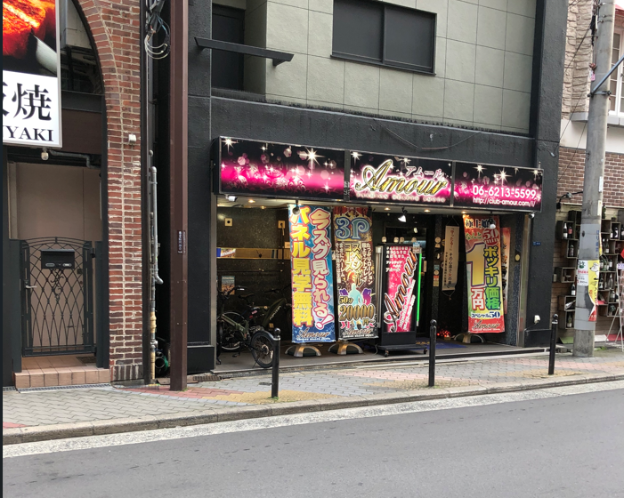
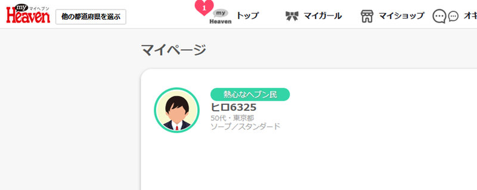
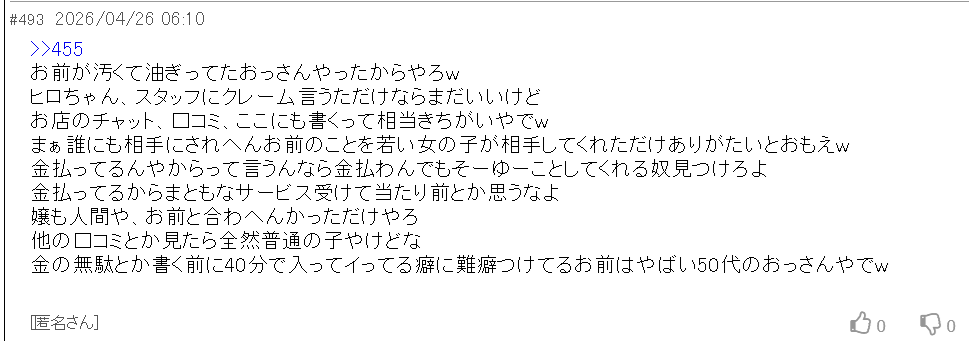
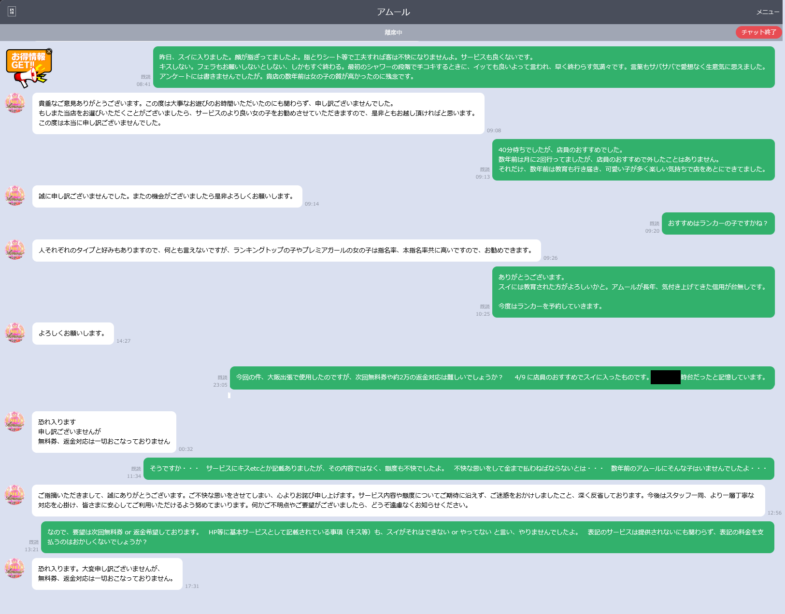
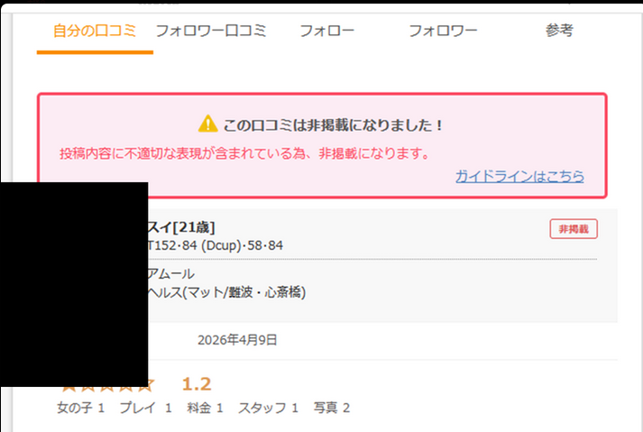
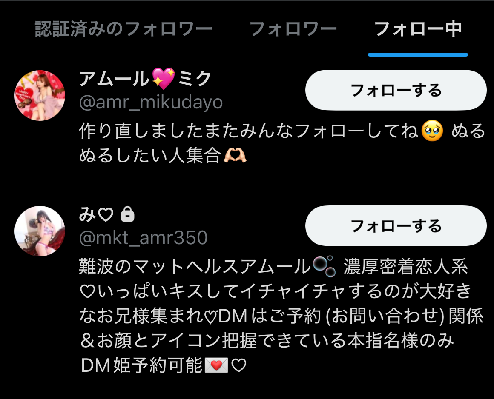

大阪・難波の風俗店「アムール」（箱ヘル＝個室マッサージ系風俗店）を利用した客（以下「ヒロちゃん」）が、風俗予約サイト「シティヘブン」に登録した際のニックネームを店側に無断で爆サイ（風俗口コミ掲示板）に投稿された件をまとめています。
「ヒロちゃん」という名前はシティヘブンのチャット（店とのやり取り）にも会話にも一切登場しないにもかかわらず爆サイに書き込まれました。この名前を知り得るのはシティヘブンの店舗管理画面にアクセスできる店関係者のみです。
さらに店側は爆サイ・X（旧Twitter）を常時監視し、客の容姿特定まで試みていた証拠が複数確認されています。
アムールを利用している・利用を検討している方はご注意ください。
・シティヘブン＝風俗店・嬢を検索・予約できる大手サイト
・爆サイ＝風俗・地域情報の匿名掲示板
・箱ヘル＝個室で嬢が施術を行う風俗店の一形態
事件の概要
| 発生日 | 2026年4月9日 |
| 店舗 | 箱ヘル アムール（難波）06-6213-5599 ※箱ヘル＝個室で嬢が施術を行う風俗店の一形態 |
| 経緯 | 東京在住の利用者がスタッフ推薦の嬢（スイ）を指名。HP記載のサービスと実態が著しく乖離。シティヘブンチャットでクレームを入れたが返金拒否→チャット決裂→爆サイ・Xに口コミ投稿 |
| 核心 | 爆サイ#493に「ヒロちゃん」という登録ニックネームが投稿された。この名前はシティヘブン管理画面からしか取得不可能な情報であり、情報漏洩の決定的証拠となっている |
| チャット確認事項 | 店はサービス不備を複数回謝罪済み（4/10・4/22）。返金・無料券対応は一切拒否。シティヘブンチャット内に「ヒロちゃん」という名前は存在しない |

決定的証拠：「ヒロちゃん」問題
| 可能性 | 成立するか | 理由 |
|---|---|---|
| 知人が教えた | × | リアルでこのニックネームを使ったことがない |
| 店内でスイに名乗った | × | 店内・スイに対して名乗っていない |
| シティヘブンチャットに記載した | × | シティヘブンチャット38通に「ヒロちゃん」の記載なし |
| シティヘブン管理画面 | ◎ | 店舗関係者のみアクセス可能。唯一の経路 |
| # | 投稿内容 | 店側しか知り得ない理由 |
|---|---|---|
| #493 | 「ヒロちゃん、40分でイってる」 | 「ヒロちゃん」はシティヘブンチャット外情報。「40分」も来店記録のみ |
| #552 | 少額訴訟→通常訴訟の反論 | シティヘブンチャット内でのみ少額訴訟に言及 |
| #525 | 「口コミ・チャット・ここにも書く」を把握 | シティヘブンチャットの宣言を知っている |
| #547 | 「出禁確定」 | 決定権を持つ者の発言 |
| #493 | 「50代のおっさん」 | シティヘブン登録年代のみ |
| #945 | 「士業かじり」 | シティヘブンチャット内でヒロちゃんが「法律を生業」を店に伝える。かつ法律関係≠士業という誤解 |
| #223（110スレ 5/20） | 「店に無料券強請るような性格のヒロちゃん」 | シティヘブンチャット内でヒロちゃんが「まず無料券で解決」と店に提案していた。この交渉は爆サイ・まとめ・Xのどこにも書かれていないため、チャットを読んだ者のみが書ける。 |
証拠画像：4点セット

登録ニックネーム「ヒロ6325」・50代・東京都。シティヘブン上にのみ存在する情報。

「ヒロちゃん」「40分」「50代」が投稿された。全てシティヘブン管理画面の情報。

※日時等マスク処理済み。シティヘブンチャット内に「ヒロちゃん」の記載は一切ない。

店側が掲載可否を決定できる。口コミ投稿の事実も店側以外知り得ない。
店側の決定的自爆投稿
以下は店側と断定・または強く疑われる投稿の中から、特に重要なものを抜粋しています。
ヒロちゃん、スタッフにクレーム言うただけならまだいいけど
金の無駄とか書く前に40分でイってる癖に難癖つけてるお前はやばい50代のおっさんやでw
店側の工作パターン分析
店側には反論できない3大失点があります。
| 失点 | 証拠 |
|---|---|
| 個人情報漏洩 | #493「ヒロちゃん・40分・50代」＋シティヘブンチャット外情報の照合 |
| 反社匂わせ恫喝 | #553「ケツ持ちおるんかは知らんけど」 |
| 容姿特定工作 | #496・#706での繰り返しの誘導 |
しかし開示請求が通れば#493の投稿者＝店側が確定するというブーメランになっている。
競合店やシティヘブンが漏洩源という主張も成立しない。「ヒロちゃん」情報をアムールスレに投稿する動機が店側以外にない。
| 役割 | 特徴 | 代表投稿 |
|---|---|---|
| 責任者クラス | 法的用語・チャット内容把握・出禁判断権あり | #525・#534・#552 |
| 感情的スタッフ | 暴言・早朝投稿・絵文字多用 | #493・#863・#899 |
| 沈静化担当 | 「個スレでやれ」「もういい」と火消し役 | #603・#606・#804 |
| 嘲笑担当 | 煽り・絵文字・Xアカウント晒し | #733・#797・#814 |
| 時間帯 | 投稿 | 状況 |
|---|---|---|
| 02:00〜05:59 | 完全ゼロ | 閉店後就寝時間 |
| 06:00〜09:59 | 複数確認 | 営業開始直後（#493は06:10） |
| 17:00〜21:00 | 最多・集中 | 夕方営業本番前後 |
| 00:00〜02:00 | 複数確認 | 閉店後帰宅直後 |
| 言っていること | 実際の行動 |
|---|---|
| 「ノータリン無能ゴミサイトのhit数は増えたか？カウントダウンはやめちゃったww」 | 一時除去したカウンターの状態を即座に把握→数字を気にしている証拠 |
| 「見てないよ〜」 | まとめサイトの内容を把握して反論 |
| 「アムールなんて3年以上検索してない」 | 毎日スレに張り付いて投稿 |
| 「関係ない」 | X・爆サイ・まとめサイトを全て監視 |
900レス超の全投稿を通じて、「シティヘブンチャット内に存在しないニックネームがなぜ#493に投稿されたか」への反論は一度もなかった。
この沈黙こそが最大の証拠である。
店側は爆サイだけでなく、ヒロちゃんのXアカウントも継続的に監視していた。その証拠として、「御厨楓」（@prX1lmcRzsNLqiW）というXアカウントが確認されている。
| アカウント名 | 御厨楓 / @prX1lmcRzsNLqiW |
| フォロー数 | 18（極少数の選択的フォロー） |
| フォロワー数 | 1（実質的な情報収集専用垢） |
| フォロー中に確認 | XXX（@amr_XXX）・XXX（@XXX_amr350 ／難波のマットヘルスアムール）——アムール在籍嬢2名 |
| 発覚経緯 | ヒロちゃんのXをフォローしていることを察知→ヒロちゃんがブロック |

■ X監視していないと書けない爆サイ投稿
まとめサイトもたてて健気
それなのに実際にはまとめサイトが作られて公開されてる……
今は「私はこれ以上関わりたくありません」って距離まで置いてる
じゃあ今公開されてるこのまとめサイトって誰の判断で作られて誰の責任で運営されてるサイトなん？
これらは継続的・組織的なX監視なしには不可能な投稿である。
口コミを投稿したり、Xで発信したりすると、その内容は即座に店側に把握され、アカウント情報・投稿内容が爆サイに晒される可能性がある。
実際にヒロちゃんは、Xアカウントを変更するたびに爆サイで晒され続けた。
店側は情報漏洩にとどまらず、ヒロちゃんの容姿・個人情報を特定するための工作を執拗に繰り返した。各投稿の詳細はセクション4を参照。以下は手段の整理である。
| 手段 | 該当 |
|---|---|
| 爆サイでの容姿情報誘導 | #496「容姿なんかも書いて」・#706「ハゲデブとか身体的特徴？」 |
| Xアカウント晒し・監視 | #797でアカウント名公開・御厨楓アカウントによるスパイフォロー |
| 防犯カメラによる特定 | #493自爆後に映像照合を試みた可能性 |
個人を特定した後は反社による恫喝を行う気なのだろうか。
ヒロちゃんがXアカウントを変更するたびに即座に晒されたという事実は、監視が終わっていないことを示している。
「口コミを書いた客を特定し、黙らせる」——これが店側の一貫した目的である。
このまとめサイトを読んでいるあなたも、アムールを利用しシティヘブンに登録している限り、同じ被害に遭う可能性がある。
法的問題点
| 問題点 | 根拠 |
|---|---|
| 個人情報保護法違反 | シティヘブン登録情報を目的外使用・第三者提供（16条・23条） |
| プライバシー侵害 | 民法709条。登録名・年代・利用情報の無断公開 |
| 侮辱罪 | 刑法231条。「きちがい」「油ぎったおっさん」等の投稿 |
| シティヘブン規約違反 | 管理画面情報の外部への漏洩 |
| 恫喝・脅迫的行為 | #553「ケツ持ち・ロクなことないで」 |
利用者への注意喚起
シティヘブンに登録している方へ
- トラブル時に登録ニックネーム・年代・利用情報が掲示板に投稿される可能性があります
- 反社会的勢力を匂わせる恫喝を受ける可能性があります
- 防犯カメラ映像による容姿特定が試みられる可能性があります
- 口コミを投稿しても店側の判断で非掲載にされる可能性があります
本件に関するシティヘブンチャット原文・爆サイ投稿は当該利用者により証拠保全済みです。
一次資料：爆サイ 箱ヘル アムール 109